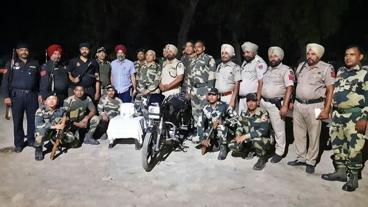

BSF Shoots Down Another Pakistani Drone Carrying Narcotics in Amritsar, Punjab

Recently, the Border Security Force (BSF) troops shot down yet another Pakistani drone carrying suspected narcotics near Rai village in Amritsar, Punjab. This is not the first time such an incident has happened. Earlier, a similar drone was recovered by the BSF troops in Punjab. This event is just one of the many instances that highlight the growing concern of the use of drones for illegal activities like smuggling and surveillance.
Examples of Drones Used for Illegal Activities
Over the years, there have been numerous instances of drones being used illegally. Here are a few examples:
- Drug Smuggling: Drones have been used to smuggle narcotics across borders. In 2019, a drone carrying heroin worth over INR 10 crore was seized by the Punjab Police. In another incident, a drone carrying drugs was intercepted on its way to a prison in the UK.
- Surveillance: Drones have also been used for illegal surveillance. In 2015, a drone was found hovering over the Prime Minister's Office in Delhi. In another case, a man was arrested for flying a drone equipped with a camera over Buckingham Palace.
- Terrorism: Drones have also been used by terror groups to carry out attacks. In 2018, two drones equipped with explosives were used in an assassination attempt on the Venezuelan President.
Impact of Drone Use for Illegal Activities
The use of drones for illegal activities can have serious consequences:
- National Security: Drones can be used for espionage and surveillance, which can pose a threat to national security.
- Public Safety: Drones can be used to carry out attacks or deliver contraband, endangering public safety.
- Economic Loss: The use of drones for smuggling can result in economic loss due to illegal imports and tax evasion.
Preventive Measures to Tackle Illegal Drone Use
To tackle the growing menace of illegal drone use, the government and law enforcement agencies can take the following measures:
- Registration and Regulation: Drones should be registered, and their use should be regulated by the government to prevent their misuse.
- Strict Checkpoints: Physical and digital checkpoints should be set up to prevent the entry of illegal drones into the country.
- Technological Solutions: Advanced technology such as anti-drone guns and sensors can be used to detect and neutralize illegal drones.
Conclusion
The use of drones for illegal activities such as smuggling and surveillance is a growing concern, and it requires immediate action. While preventive measures can be taken by the government and law enforcement agencies, it is equally important for individuals to be aware of the risks associated with drone use and report any suspicious activity to the authorities. Only then can we combat the misuse of this technology and ensure public safety and national security.
References:
Hashtags:
#BSF #PakistaniDrone #narcotics #Amritsar #Punjab
Category:
Technology/Security
Curated by Team Akash.Mittal.Blog
Share on Twitter Share on LinkedIn